From the matrix of Block 3 a tree is built: each object starts on its own and clusters are merged until only one remains. This chapter explains the ten rules that decide how clusters are merged, the three numbers that tell you whether the tree deserves your trust, how to cut it, the dendrogram studio with its six layouts and more than forty settings, the heat map with trees, and the comparison of rules by means of tanglegrams.
Block 4 has three cards. In 1 · Build the tree you choose the linkage rule and build the tree. In 2 · The tree and its cut you evaluate it, cut it into clusters and draw it. In 3 · Compare linkage rules and draw tanglegrams you compare it with the trees produced by other rules. At the top, the theory card sums up in three lessons what to look at before trusting a tree. The block becomes available as soon as Block 3 computes a dissimilarity matrix.
Hierarchical clustering does not produce a single partition but a whole family of nested partitions: from n clusters of one object each to a single cluster containing them all. It is represented by a dendrogram, in which the height of each merge is the dissimilarity at which the two branches were joined. There are two ways to build it (figure 5.1).
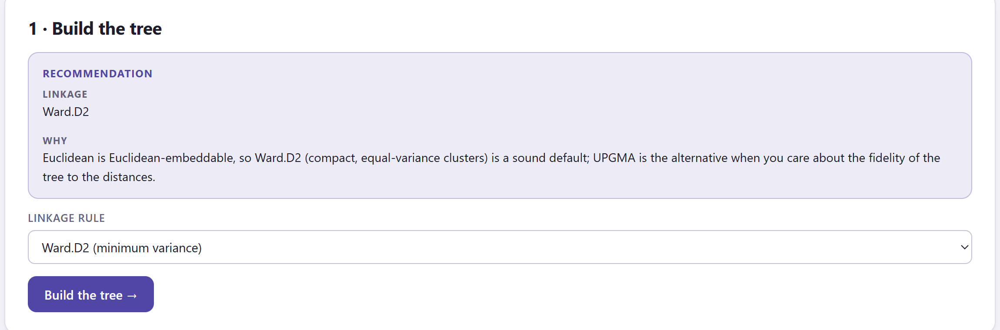
| If the Block 3 matrix… | then |
|---|---|
| is Euclidean or nearly so (negative mass < 5%) | Ward.D2: compact clusters of similar variance. The alternative is UPGMA if what matters is how faithfully the tree reproduces the distances. With community tables it adds that UPGMA on Bray–Curtis remains the classic choice. |
| is not Euclidean (negative mass ≥ 5%) | UPGMA (average), which needs only the matrix. If you want Ward, go back to Block 3 and tick the square root (√d). |
Agglomeration works on the full matrix, and its cost grows with the cube of the number of objects. With a few hundred objects the tree takes less than a second; the app accepts up to 1500. The rule comparison in card 3 is limited to 600 objects. For larger tables, use the partitioning methods of Block 5.
When two clusters are merged, one must decide how far the new cluster lies from each of the others. That decision is the linkage rule, and it changes the shape of the clusters the tree produces (figure 5.3). All the agglomerative rules in the app are computed with the Lance–Williams update formula (table 5.1), the same one used by the reference statistical software.
If clusters i and j, with ni and nj objects, are merged, the distance from the new cluster to any other cluster k is computed from the distances already known:
d(ij, k) = αi d(i, k) + αj d(j, k) + β d(i, j) + γ |d(i, k) − d(j, k)|
Each rule is a choice of the four coefficients (table 5.1). At no step is it necessary to go back to the original data, which is why any rule can be applied to a dissimilarity matrix, although the centroid, median and Ward rules only make geometric sense if that matrix is Euclidean. For those three, the app squares the distances before agglomerating and takes the square root of the heights, so that the dendrogram axis stays in the units of the matrix.
| In the app | αi · β · γ | Character |
|---|---|---|
| Ward.D2 (minimum variance) | (ni + nk)/nijk · −nk/nijk · 0 | Merges the clusters that least increase the within-cluster variance. Compact clusters of similar size. Requires Euclidean distances. |
| Average · UPGMA | ni/(ni + nj) · 0 · 0 | Mean of all dissimilarities between members. Balanced; it usually gives the highest cophenetic correlation. A classic in taxonomy and ecology. |
| Complete (farthest neighbour) | ½ · 0 · +½ | Distance of the farthest pair. Compact clusters of similar diameter; an outlier delays the merging of its cluster. |
| Single (nearest neighbour) | ½ · 0 · −½ | Distance of the closest pair. Recovers elongated or curved shapes, but tends to chain objects one by one. |
| Weighted · WPGMA (McQuitty) | ½ · 0 · 0 | Like UPGMA, but each subcluster carries the same weight regardless of its size. |
| Centroid · UPGMC | ni/(ni + nj) · −ninj/(ni + nj)² · 0 | Distance between centroids. Can produce reversals (section 5.3). |
| Median · WPGMC | ½ · −¼ · 0 | Centroid without weighting by size. Same risk of reversals. |
| Ward.D (on unsquared d) | as Ward.D2, on unsquared d | Ward's formula applied to unsquared distances. Only for reproducing older analyses. |
| Flexible beta (Lance–Williams) | (1 − β)/2 · β · 0 | A single adjustable parameter. With β = −0.25 it behaves like a space-conserving average; more negative values give more compact clusters (similar to Ward). |
| DIANA (divisive) | — (does not agglomerate) | Successive splits by diameter. Good for a few large clusters. |
When you click Build the tree →, the second card appears. Before you look at the dendrogram, five tiles and a list of checks tell you whether the tree is a good summary of the matrix (figure 5.4).
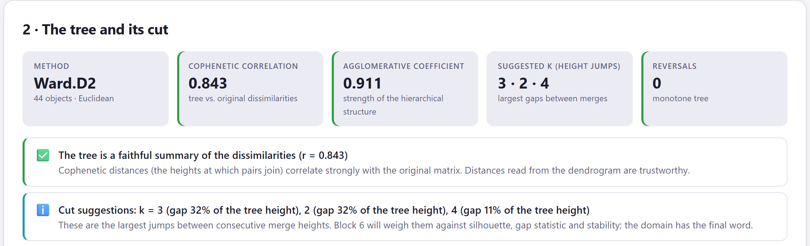
1 2 3 4 5 6The cophenetic distance between two objects is the height at which they are joined in the tree. The cophenetic correlation is the Pearson correlation between those heights and the original dissimilarities of the matrix: it measures how much of the matrix survives being summarised as a tree. UPGMA usually gives the highest value, because its rule averages distances; Ward and complete linkage sacrifice fidelity in exchange for compact clusters.
The agglomerative coefficient is the average, over all objects, of 1 − (height of the object's first merge / height of the last merge of the tree). Near 1, objects are merged very early relative to the final merge: a clear structure. It grows with the number of objects and depends heavily on the rule (Ward inflates it), so it is only useful for comparing trees of the same data built with the same rule. With DIANA it is computed in the same way and is called the divisive coefficient.
A reversal occurs when a cluster is merged at a lower height than an earlier merge that formed it: the branch goes “down” instead of up. Only the centroid and median rules can produce them. They make a cut by height ambiguous.
| Tile | Green | Amber | Red |
|---|---|---|---|
| Cophenetic correlation | ≥ 0.75 | 0.60–0.75 | < 0.60 |
| Agglomerative coefficient | ≥ 0.70 | 0.50–0.70 | — |
| Reversals | 0 | 1 or more | — |
| Check | Level | What it suggests |
|---|---|---|
| The tree is a faithful summary of the dissimilarities | ✅ | The distances read from the dendrogram are reliable. |
| Moderate cophenetic correlation | ⚠️ | The tree distorts some distances. Compare rules in card 3: UPGMA usually maximises the correlation. |
| Low cophenetic correlation | ⛔ | The dendrogram represents the matrix poorly. Try another rule, another coefficient (Block 3) or a partitioning method (Block 5). |
| N reversals in the tree | ⚠️ | Cut by number of clusters rather than by height, or use average or Ward. |
| Chaining | ⚠️ | More than 70% of the merges in the upper half of the tree add a single object to a growing cluster: chains instead of compact clusters. Typical of single linkage on gradients. |
| This linkage assumes Euclidean distances | ⚠️ | Ward, centroid or median on a non-Euclidean matrix (negative mass ≥ 10%): take √d in Block 3 or use average or complete. |
| Divisive analysis | ℹ️ | Reminds you how DIANA works and that its divisive coefficient replaces the agglomerative one. |
| Weak hierarchical structure | ℹ️ | Coefficient < 0.5: objects are merged late relative to the final merge; the data look more like a gradient than like nested clusters. |
| Cut suggestions | ℹ️ | The three largest height jumps, with their size relative to the height of the tree (section 5.4). |
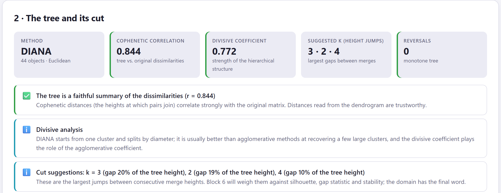
Cutting the dendrogram at a given height produces a partition: each branch that crosses the cut line is a cluster. The block offers a figure to help you decide where to cut, a control to make the cut and two tables to view the result.
When it builds the tree, the app already cuts it: into as many clusters as the known grouping has, if there is one, or at the first suggested k. Clusters are numbered from left to right in leaf order, so cluster 1 is always the leftmost one in the dendrogram. If you cut by height, the app counts how many branches the line crosses and updates k; if you cut by k, the line is placed halfway between the two merges that separate k − 1 from k clusters.
A long vertical stretch without merges in the dendrogram means that the clusters below are well separated. In the height figure, that stretch appears as a large jump between the bar for k − 1 and the bar for k. The app sorts the jumps from largest to smallest between k = 2 and k = 12 and highlights the first three; the Suggested k tile and the Cut suggestions check give the same three, with the size of each jump as a percentage of the total height. It is a first idea: Block 6 tests it against the silhouette, the gap statistic, stability and ten other criteria.
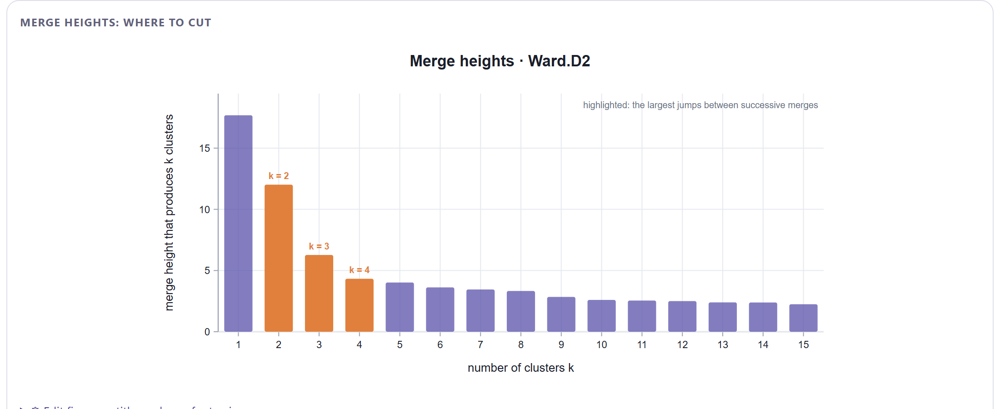
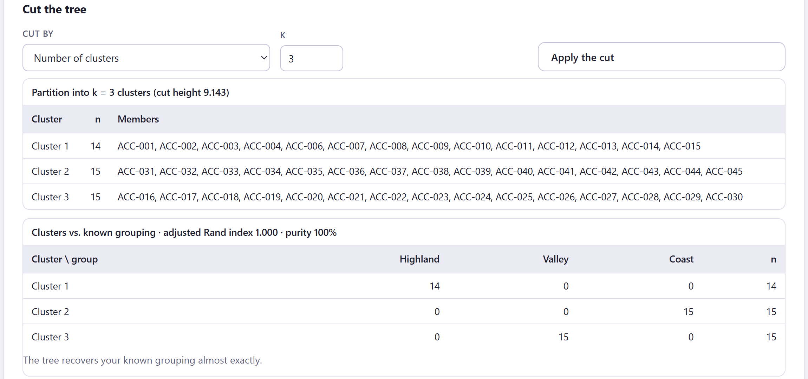
1 2 3 4 5| ARI | App sentence |
|---|---|
| > 0.80 | The tree recovers your known grouping almost exactly. |
| 0.50–0.80 | Substantial agreement with the known grouping, with some objects placed differently. |
| 0.20–0.50 | Partial agreement: the clusters and the known grouping capture different structure. |
| < 0.20 | The clusters are unrelated to the known grouping (an ARI near 0 is what random labels give). |
Purity is the proportion of objects that fall into the majority known group of their cluster. A low ARI does not mean that the tree is wrong: it may be finding a different structure, just as real, that the prior classification does not capture.
The studio is the central figure of the block. By default it draws a rectangular dendrogram with branches coloured by cluster, shaded boxes, the cut line, the cluster numbers, the leaves with their names and, if there is a known grouping, a coloured dot under each leaf (figure 5.8). Everything can be changed from Edit figure, and every setting is saved for the report.
Any node of the tree can be rotated without changing anything: a dendrogram with n leaves has 2n−1 equivalent drawings, and Leaf order chooses one of them. Two neighbouring leaves in the row may be joined very high up; two leaves far apart may belong to the same low branch. The only thing you can read from a dendrogram is the height at which two objects are joined. Use the leaf order to make the figure readable (for example, aligned with the first PCoA axis), never as a result.
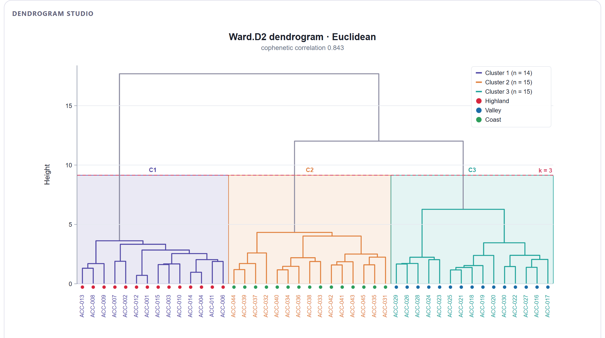
| Group | Controls | What they do |
|---|---|---|
| Layout | Layout | Six layouts: rectangular with the leaves at the bottom, triangular, horizontal with the leaves on the right, horizontal triangular, radial (circular) and radial triangular (fan). |
| Cut | Clusters k (cut), Cut by, Cut height | They cut the figure only, without touching the block's partition; useful for seeing what another k would look like before applying it. |
| Branch colour | Colour branches by, Cluster palette, Known-group palette, Gradient colour map, Colour above the cut, Single colour | By cluster of the cut, by known grouping (a branch is coloured if all its leaves belong to the same group), by height gradient or in a single colour; branches above the cut use the neutral colour. |
| Branches | Branch width | Width from 0.5 to 5 px. |
| Labels | Leaf labels, Label size, Label colour, Label angle offset, Italic labels (taxa) | Show them (automatic up to 120 leaves), size, colour by cluster, by known grouping or plain, extra rotation, and italics for scientific names. |
| Leaf symbols | Leaf symbols, Symbol size, Different shapes per group | A dot under each leaf coloured by known grouping or by cluster, and different shapes per known group for greyscale printing. |
| Cut and boxes | Show cut line, Cut line colour, Cluster boxes, Box fill opacity, Dashed boxes, Cluster numbers | The dashed cut line (a circle in the radial layouts), the shaded boxes for each cluster (sectors in radial layouts) and the labels C1, C2… |
| Simplify | Collapse clusters into triangles, Hang leaves | Replaces each cluster with a triangle showing its size; hangs the leaves at a fraction of the height instead of aligning them at zero. |
| Leaf order | Leaf order, Reverse order | Rotates the branches without changing the tree: default order, along the first PCoA axis, by known grouping, compact clusters first, or alphabetical where possible. |
| Axis | Height axis, Axis title, Guide circles (radial) | The height axis (guide circles in radial layouts) and its title. |
| Radial | Inner radius %, Start angle, Sweep angle | Central hole, start angle and opening of the circle (from 90 to 360°; with less than 360 the result is a fan). |
| Legend | Legend content, Legend position | Clusters, known groups, both or none; automatic, top right or top left, below the figure, or hidden. |
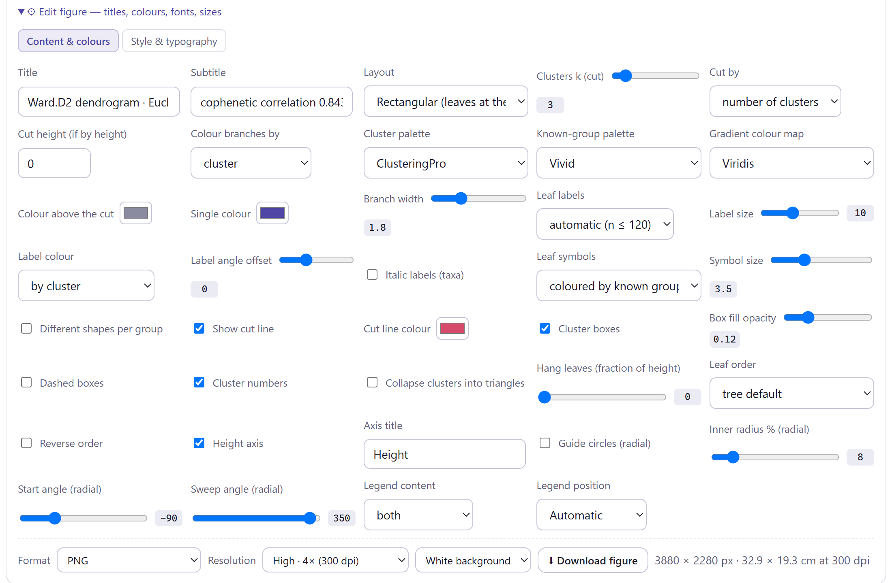
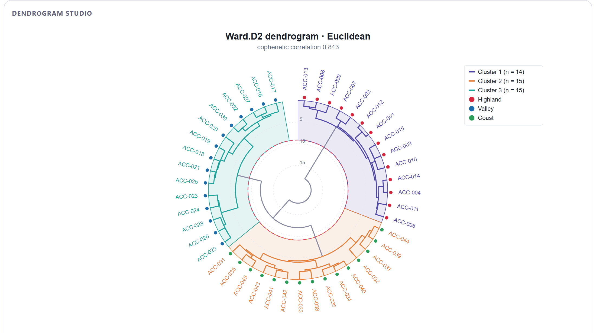
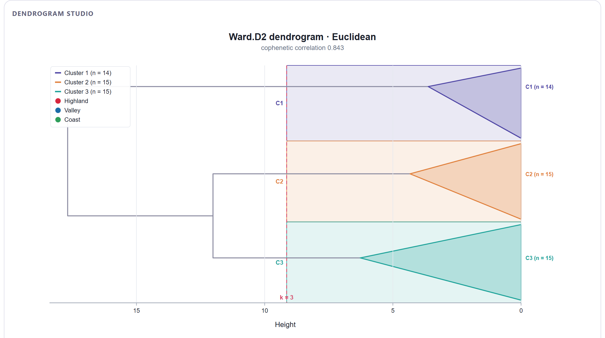
The automatic position places the legend at the top right, inside the plot area. If the tree is tall on that side, the legend may hide branches or the cut label. Change it to Below the plot in Legend position, or reduce its content with Legend content. Practice 1 in section 5.8 uses this option.
Below the studio, Heat map of the variables with the object tree crosses the objects, ordered by the tree, with the numerical variables of the working matrix (figure 5.11). It is the most direct way to see which variables distinguish the clusters. It does not appear when the input is a distance matrix or when there are fewer than two numerical variables.
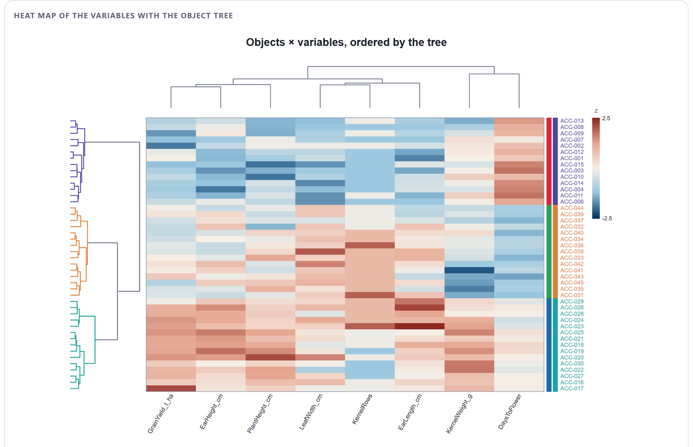
| Control | What it does |
|---|---|
| Clusters k | Cut of the object tree used to colour it (independent of the block's cut). |
| Cell colour map | The colour ramp of the cells. |
| z-score the variables | Standardises each column so that all of them use the full scale; untick it to see the values of the working matrix. |
| Cluster the variables too | Orders the columns with a UPGMA tree of Euclidean distances between standardised variables and draws it at the top. |
| Object labels, Label size, Label colour | Row labels (automatic up to 80 objects), size, and colour by cluster or plain. |
| Tree size (px), Leaf order | Width of the object tree and leaf order, as in the studio. |
Below the heat map, ⬇ Cluster membership (CSV) saves the cluster of each object (with the known grouping, if there is one) and ⬇ Merge table (CSV) saves the n − 1 merges of the tree with their step, the two branches joined, the height and the size of the resulting cluster. This table lets you rebuild the dendrogram in another program. The Continue to partitioning methods → button takes you to Block 5.
Different rules give different trees from the same data. Instead of trusting just one, the third card computes them all on the same matrix and measures how much they agree. A structure that survives every rule is real; one that appears with a single rule deserves suspicion.
| Measure | What it compares | Reading |
|---|---|---|
| Cophenetic r | Each tree against the original matrix (section 5.3). | Higher = more faithful tree. |
| Aggl./div. coefficient | Strength of the hierarchical structure of each tree. | Only between trees built with the same rule. |
| Reversals | Reversals in each tree. | Ideally 0. |
| Cluster sizes at k | Cluster sizes when each tree is cut at the current k. | Very unequal sizes (58 / 1 / 1) betray chaining. |
| ARI vs (current rule) | The partition of each tree at k against that of the tree from card 1. | 1 = same partition. |
| Fowlkes–Mallows Bk | Proportion of pairs of objects that are together in both trees cut at k. | 1 = same partition; 0 = nothing in common. |
| ARI vs known groups | Each partition against the known grouping. | Which rule recovers it best. |
| Baker's γ (figure 5.13) | Rank correlation of the step at which each pair of objects first falls into the same cluster, in one tree and in the other. | Measures the whole hierarchy, not just the cut. |
| Cophenetic correlation between trees (figure 5.13) | Pearson correlation between the merge heights of each pair in both trees. | Alternative to Baker's γ in the figure editor. |
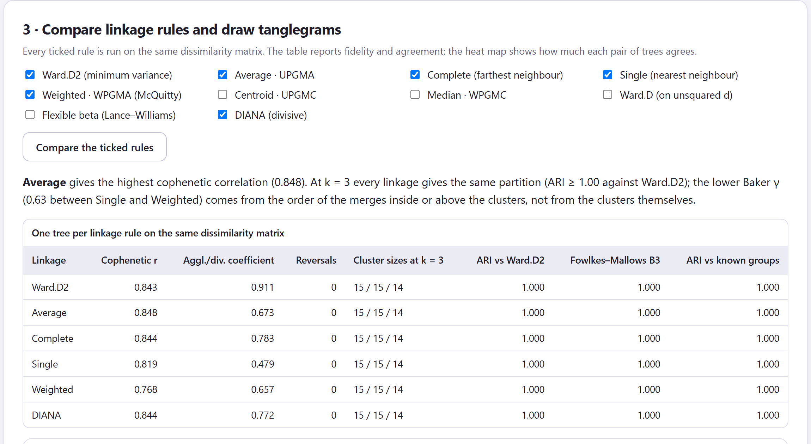
In the maize data, WPGMA has a Baker's γ of 0.63 with the other rules and yet, when cut into three clusters, all rules give exactly the same partition (ARI and Fowlkes–Mallows = 1.000). The difference lies in the order of the merges: WPGMA, which does not weight by cluster size, orders differently the merges that occur within each region and above them. Baker's γ is sensitive to these changes of order because it works with steps, not heights. When the partitions coincide, the app says so explicitly in the card's paragraph; read it together with the ARI columns before concluding that “the clusters change with the rule”.
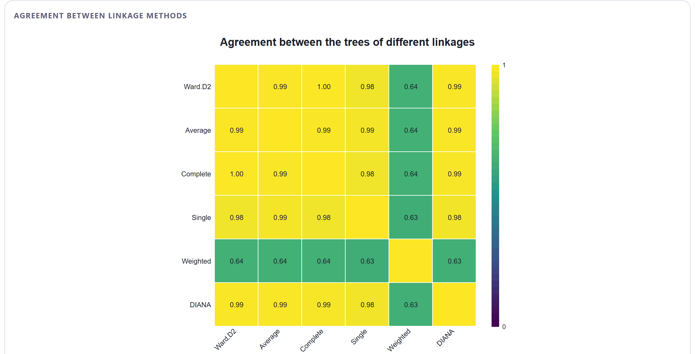
The tanglegram places two trees face to face, with the same leaves connected by lines (figure 5.14). Choose the trees in Left tree and Right tree (by default, the tree from card 1 and the average tree, or Ward.D2 if the tree from card 1 is already average) and click Draw the tanglegram. The app rotates the branches of both trees, without changing them, so that the lines cross as little as possible, and summarises the result below the figure.
Entanglement measures how far each leaf moves between its position in the left tree and in the right tree, with the differences raised to the power 1.5 and divided by the worst possible case (the reversed order): 0 is the same order, 1 is the reversed order. Since the leaf order is arbitrary (section 5.5), entanglement only makes sense after untangling: the app rotates the branches of one tree to follow the order of the other, then those of the other, and repeats, keeping the best combination. The number of crossings counts the pairs of lines that intersect.
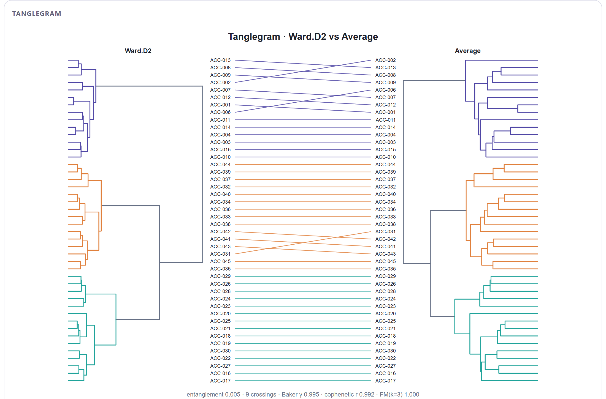
| Control | What it does |
|---|---|
| Colour by clusters of the left tree (k) | Colours branches and lines by the clusters of the left tree; with k = 1 everything takes the Connector colour. |
| Untangle (rotate branches) | Turns untangling on; untick it to see both trees in their default order. |
| Labels, Label size | Leaf names next to each tree (shown by default up to 80 leaves). |
| Space between trees, Branch width, Connector width | Proportion of the width given to the lines, and line widths. |
With each example prepared in Blocks 2 and 3 using the proposed settings, table 5.8 summarises what Block 4 gives. The practices focus on what each case teaches; in several of them the proposed rule is changed on purpose.
| Example | Rule | Cophenetic | Coef. | Jumps | k · ARI | Comparison |
|---|---|---|---|---|---|---|
| Maize landraces | Ward.D2 | 0.843 | 0.911 | 3 · 2 · 4 | 3 · 1.000 | UPGMA the most faithful (0.848); same partition with all six rules |
| Species presence | UPGMA* | 0.890 | 0.588 | 2 · 3 · 4 | 3 · 0.898 | Ward.D2 recovers the habitats (ARI 1.000); single linkage chains |
| Insect abundance | UPGMA* | 0.901 | 0.671 | 2 · 4 · 6 | 3 · 0.419 | Ward.D2 recovers the landscapes (ARI 1.000) |
| Soil profiles | UPGMA | 0.898 | 0.856 | 2 · 3 · 4 | 2 · — | All agree (Baker's γ ≥ 0.92) |
| Distance matrix | UPGMA | 0.990 | 0.701 | 3 · 6 · 11 | 3 · — | All give the same partition |
| Four simulated clusters | Ward.D2 | 0.902 | 0.974 | 4 · 2 · 3 | 4 · 1.000 | Same partition with all six rules |
| Uniform noise | Ward.D2 | 0.488 | 0.856 | 3 · 6 · 4 | 3 · — | Baker's γ down to −0.02; single gives 58 / 1 / 1 |
* The app proposes Ward.D2 for these two nearly Euclidean matrices; in the practices UPGMA, the classic choice for Jaccard and Bray–Curtis, is built first and then compared with Ward.D2.
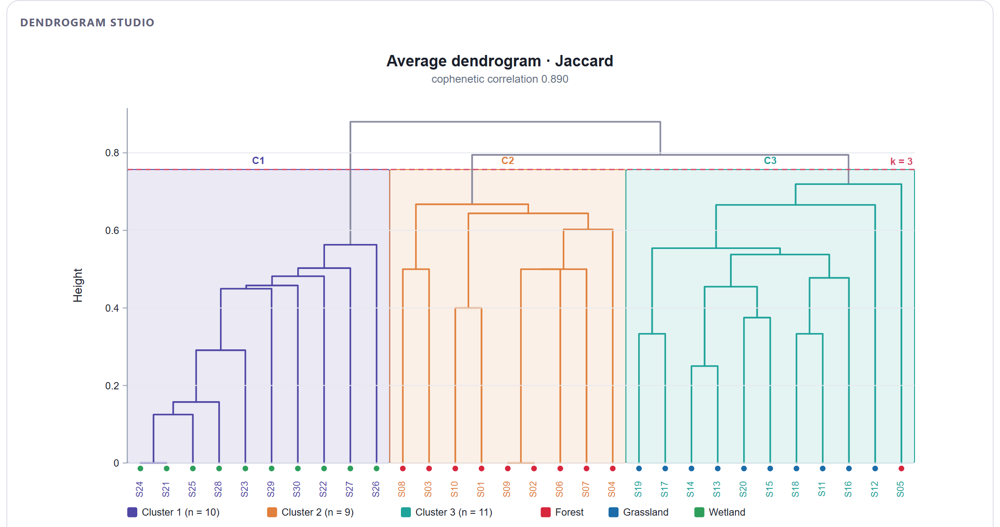
UPGMA reproduces the distances better (0.890 versus 0.833 for Ward.D2), but Ward.D2 recovers the habitats better. There is no contradiction: UPGMA faithfully depicts S05 as lying halfway between forest and grassland, and Ward's rule, which favours clusters of similar size, assigns it to the forest. Which tree to report depends on the question. If you want to describe the floristic similarity between sites, use UPGMA; if you want a partition into vegetation types, use Ward and, in Block 6, check the stability of that doubtful site.
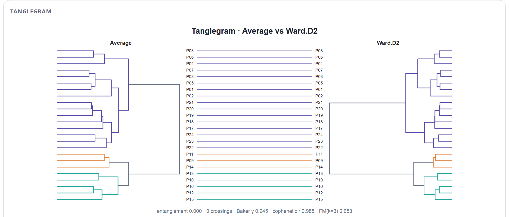
Two trees can have the same shape and yet produce different partitions when cut at the same k, because what changes is the relative height of the merges. In UPGMA, the difference between the two subclusters of conventional fields is larger than the difference between organic fields and hedgerows; in Ward, which penalises large, heterogeneous clusters, the reverse is true. UPGMA's largest height jump is at k = 2 (conventional fields versus organic fields and hedgerows), not at k = 3: the tree suggests that the main structure of these communities has two levels, not three.
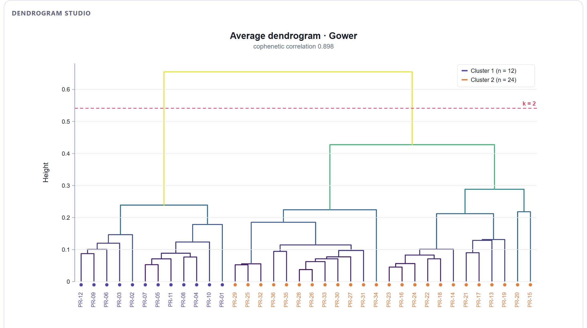
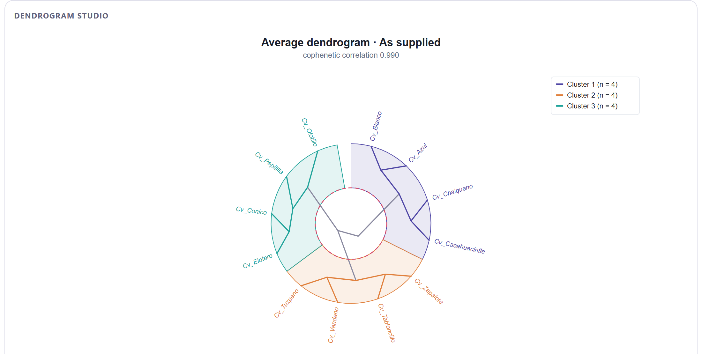
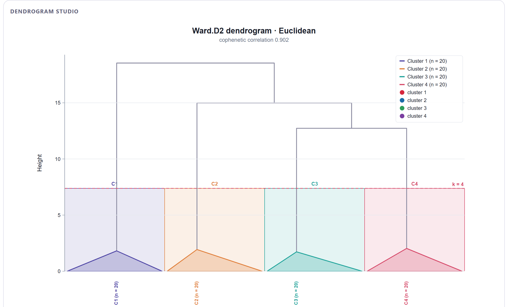
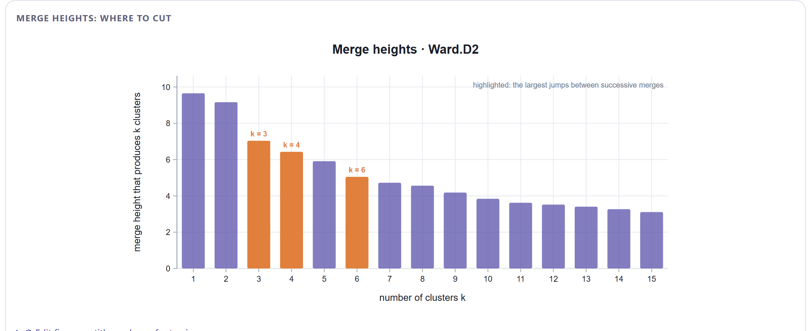
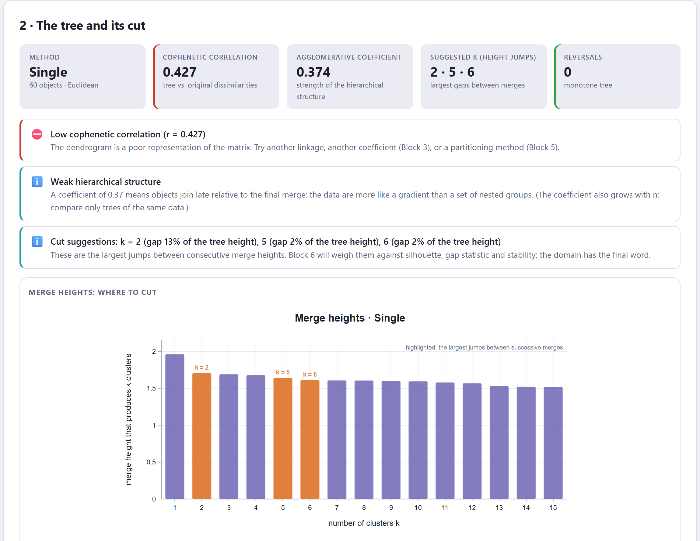
A high agglomerative coefficient does not prove that clusters exist: Ward always inflates it, because its criterion makes the last merge much higher than the first ones even when the data are noise. It is the cophenetic correlation, the shape of the height figure and the disagreement between rules that reveal the lack of structure. This is the third warning sign, after the Hopkins statistic in Block 2 and the disagreement between coefficients in Block 3.
In the methods section: the linkage rule (with β if you used flexible beta), the dissimilarity coefficient on which the tree was built, the cophenetic correlation, the cut criterion and height, and the number of clusters. If you compared rules, the most faithful rule and whether the partitions coincide. One sentence is enough: “The tree was built with UPGMA on Bray–Curtis distances (cophenetic correlation 0.901) and cut into two clusters at the largest height jump; Ward, complete, single, weighted and DIANA produced concordant hierarchies (Baker's γ ≥ 0.88).” The automatic paragraph in Block 8 drafts it with your values.
With the tree built, cut and compared, the next chapter presents the other major family: methods that look directly for k clusters without building a hierarchy. These are k-means and its variants, PAM and CLARA, fuzzy clustering, Gaussian mixtures, DBSCAN and spectral clustering, together with a comparison of all of them at the same k.